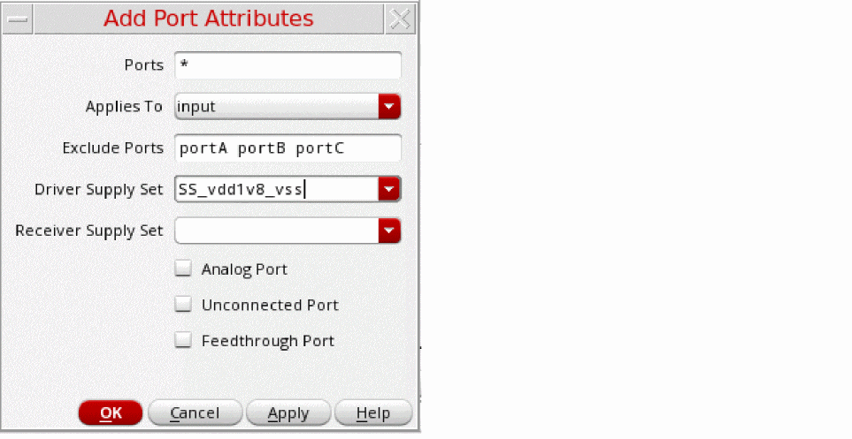
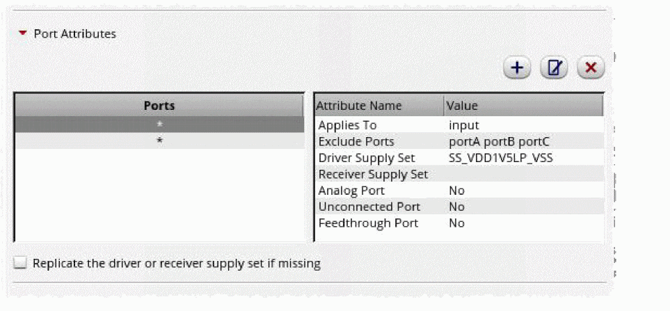

Registering Port Attributes
There are specific design configurations where a boundary port is connected to different blocks that have different supply sets. This leads to ambiguities during the 1801 power intent extraction or the In-Design checks to associate the boundary ports to a power domain.
- Add ports by using the Add Port Attributes form in the Port Attributes section on the Export tab of the Power Manager Setup form to resolve such an ambiguity. For analog macros, Power Manager offers a mechanism of hierarchical supply traversal till device level to extract power attributes for the boundary ports.
- Specify the port names or regular expression in the Ports field.
- Define the direction attribute by using Applies To.
- Define the ports for exclusion in the Exclude Ports field.
- Select the driver and receiver supply set.
-
Specify if it is the an Analog, Unconnected, and Feedthrough port and click OK.
Alternatively, you can useportAttributesin the setup template as shown:portAttributes(
(nil
ports "enable_pin"
driverSupplySet"SS_VDD_GND"
receiverSupplySet"SS_VDD_GND"
isAnalog<t/nil>
isUnconnected<t/nil>))
You can specify the following for a particular list of ports defined usingportAttributes:
Driver and receiver supply set associated with the digital ports.
Analog and unconnected ports, where you can add a separate set of ports that do not have the driverSupplySet or receiverSupplySet.
The port attributes specified usingportAttributesshould take the highest precedence and override other definitions. The 1801 power intent extraction or the in-design checks consider the attributes specified for ports by usingportAttributes, if registered in the setup template. If you specify both the driver and the receiver supply set for a port, they are used during extraction. If you specify only a driver supply set for input port, the 1801 power intent extraction or the In-Design Checks use it and trace only the receiver supply set and conversely.
 -
Select the following options in the Export Options section to control the extractor behavior for the specific design scenarios:
- Consider inputOutput terms for internal power criterion: For details, see allowInoutLDOPins.
- Consider inputOutput terms for monitor power criterion: For details, see allowInoutMonitorPins.
- Consider symmetrical source and drain for supply tracing: Defines a port with a predefined supply set or power domain that can be checked for the correct or compatible connection at the receiver side. By default, this option is deselected. Supply tracing is done by Power Manager for MOS terminals (Source and Drain) by considering them asymmetric in nature. When this option is selected, Power Manager traces through all devices irrespective of the way they are connected in the design.
- Use anonymous supply for top level ports: Enables the use of an anonymous supply for the top-level ports instead of the default supply set.
Related Topics
Registering Supply Set and Power Domain
Return to top